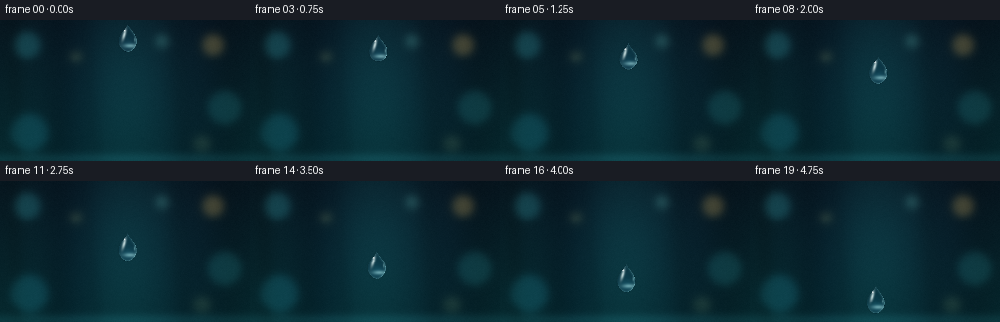
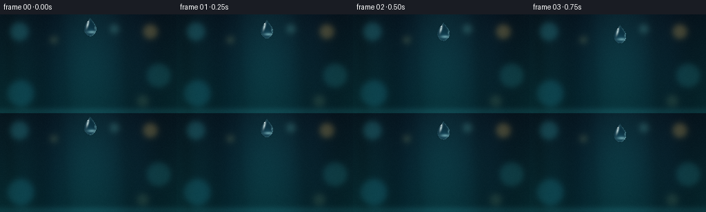

CODING AGENTS AS PIXEL WORLD MODELS
traex/GPT-5.6-Sol · instance_preservation_0044
点击播放 · 原生 RGB 像素
逐轮保存的候选
回放视频、检查图与代码变化。
每份候选均可单独播放。实际图片检查记录在下方工具轨迹中。
候选 01播放与检查图
点击播放 · 原生 RGB 像素

展开代码变化
--- 上一保存版本
+++ 本次保存版本
@@ -0,0 +1,223 @@
+"""Procedurally render a cinematic macro shot of one falling water droplet.
+
+The render is deliberately deterministic. It uses only numpy/OpenCV/Pillow
+and writes the benchmark artifacts through artifact_io.save.
+"""
+
+from pathlib import Path
+
+import cv2
+import numpy as np
+
+import artifact_io
+
+
+W, H = 256, 144
+N = 20
+S = 4 # supersampling for clean, sub-pixel silhouettes
+WW, HH = W * S, H * S
+
+
+def gaussian(x, y, cx, cy, sx, sy):
+ return np.exp(-0.5 * (((x - cx) / sx) ** 2 + ((y - cy) / sy) ** 2))
+
+
+def make_background():
+ """A static, heavily defocused macro background with plenty of depth."""
+ yy, xx = np.mgrid[0:HH, 0:WW].astype(np.float32)
+ x, y = xx / S, yy / S
+
+ # Deep petrol-blue vertical gradient.
+ top = np.array([5.0, 17.0, 25.0], np.float32)
+ bottom = np.array([4.0, 35.0, 40.0], np.float32)
+ q = (y / H)[..., None]
+ bg = top * (1.0 - q) + bottom * q
+
+ # Soft depth planes: cool daylight behind the drop and vague foliage.
+ haze = gaussian(x, y, 132, 62, 68, 75)[..., None]
+ bg += haze * np.array([6.0, 28.0, 31.0], np.float32)
+ bg -= gaussian(x, y, 74, 80, 25, 90)[..., None] * np.array([3, 13, 11], np.float32)
+ bg -= gaussian(x, y, 196, 86, 34, 100)[..., None] * np.array([2, 12, 10], np.float32)
+
+ # Out-of-focus vertical stems, intentionally very subtle.
+ stems = np.zeros((HH, WW), np.float32)
+ for cx, width, strength, lean in [
+ (15, 7, .42, 5), (59, 12, .36, -7), (184, 9, .38, 9),
+ (234, 15, .46, -4), (92, 5, .18, 12),
+ ]:
+ center = cx + lean * (y / H - .5)
+ stems += strength * np.exp(-0.5 * ((x - center) / width) ** 2)
+ bg *= (1.0 - 0.23 * np.clip(stems[..., None], 0, 1))
+
+ # Large creamy circles of confusion. Their low contrast avoids competing
+ # with the water drop, while the color visible through it sells refraction.
+ bokeh = np.zeros_like(bg)
+ spots = [
+ (28, 25, 13, (18, 52, 54), .72),
+ (218, 25, 10, (83, 62, 26), .70),
+ (230, 89, 17, (14, 48, 48), .58),
+ (30, 115, 19, (10, 42, 47), .66),
+ (166, 21, 6, (38, 65, 59), .58),
+ (78, 37, 5, (58, 55, 30), .48),
+ (207, 126, 8, (45, 49, 29), .42),
+ ]
+ for cx, cy, r, color, amp in spots:
+ # A very soft disk: broad Gaussian plus a diffuse central plateau.
+ d2 = (x - cx) ** 2 + (y - cy) ** 2
+ disk = 1.0 / (1.0 + np.exp((np.sqrt(d2 + 1e-5) - r) / 2.2))
+ disk = cv2.GaussianBlur(disk, (0, 0), 2.2 * S)
+ bokeh += disk[..., None] * np.asarray(color, np.float32) * amp
+ bg += bokeh
+
+ # A subdued, out-of-focus reflective band low in the composition gives a
+ # fixed reference against which the downward travel reads immediately.
+ band = gaussian(x, y, 132, 142, 170, 4.5)[..., None]
+ bg += band * np.array([7.0, 20.0, 21.0], np.float32)
+
+ # Fixed fine grain prevents sterile computer gradients; keeping it fixed
+ # from frame to frame avoids temporal shimmer.
+ rng = np.random.default_rng(4481)
+ grain_small = rng.normal(0, 1, (H, W)).astype(np.float32)
+ grain = cv2.resize(grain_small, (WW, HH), interpolation=cv2.INTER_CUBIC)
+ bg += grain[..., None] * np.array([0.75, 0.90, 0.95], np.float32)
+ return np.clip(bg, 0, 255).astype(np.float32)
+
+
+def bezier(p0, p1, p2, p3, count=30):
+ t = np.linspace(0, 1, count, endpoint=False, dtype=np.float32)[:, None]
+ return ((1-t)**3*p0 + 3*(1-t)**2*t*p1 + 3*(1-t)*t**2*p2 + t**3*p3)
+
+
+def droplet_polygon(cx, cy, stretch):
+ """Classic, gently rounded falling-drop profile as a closed Bezier loop."""
+ # Vertical stretching grows only a little with speed; area is conserved.
+ sy = stretch
+ sx = 1.0 / np.sqrt(stretch)
+ def p(a, b):
+ return np.array([cx + a * sx, cy + b * sy], np.float32)
+
+ top, bottom = p(0, -13.0), p(0, 13.2)
+ pieces = [
+ bezier(top, p(-1.4, -9.1), p(-8.0, -4.6), p(-8.9, 1.4)),
+ bezier(p(-8.9, 1.4), p(-9.7, 7.1), p(-5.4, 12.8), bottom),
+ bezier(bottom, p(5.3, 12.8), p(9.8, 7.2), p(8.9, 1.4)),
+ bezier(p(8.9, 1.4), p(8.0, -4.6), p(1.4, -9.1), top, 31),
+ ]
+ return (np.concatenate(pieces, axis=0) * S).round().astype(np.int32)
+
+
+def composite_layer(image, color, alpha):
+ alpha = np.clip(alpha, 0.0, 1.0)[..., None]
+ return image * (1.0 - alpha) + color * alpha
+
+
+def render_drop(background, cx, cy, speed, phase):
+ img = background.copy()
+ yy, xx = np.mgrid[0:HH, 0:WW].astype(np.float32)
+ x, y = xx / S, yy / S
+ stretch = 1.00 + 0.065 * speed
+ poly = droplet_polygon(cx, cy, stretch)
+
+ hard = np.zeros((HH, WW), np.uint8)
+ cv2.fillPoly(hard, [poly], 255, lineType=cv2.LINE_AA)
+ inside = hard > 127
+ mask = cv2.GaussianBlur(hard.astype(np.float32) / 255.0, (0, 0), .34 * S)
+
+ # Very restrained exposure smear above the moving drop, plus a narrow wake.
+ # It gives directional motion while the main silhouette remains tack sharp.
+ smear = np.zeros((HH, WW), np.float32)
+ blur_len = 0.8 + 1.4 * speed
+ for k in range(1, 7):
+ shifted = np.roll(mask, -int(round(k * blur_len * S / 6)), axis=0)
+ smear += shifted * (7-k) / 65.0
+ smear *= (1.0 - mask) * (0.18 + .08 * speed)
+ trail_color = np.zeros_like(img) + np.array([70, 147, 157], np.float32)
+ img = composite_layer(img, trail_color, smear)
+
+ # A thin dark separation just outside the left/lower silhouette.
+ outside_dist = cv2.distanceTransform(255-hard, cv2.DIST_L2, 5) / S
+ halo = np.exp(-outside_dist / .72) * (~inside)
+ directional_dark = np.clip(.62 - (x-cx)/22.0, .08, .75)
+ img *= (1.0 - (halo * directional_dark * .24)[..., None])
+
+ # Convex water acts as a lens. Sample an inverted, compressed view of the
+ # backdrop so colored bokeh really appears refracted through the drop.
+ map_x = (cx * S + (xx - cx*S) * .58).astype(np.float32)
+ map_y = (cy * S - (yy - cy*S) * .72).astype(np.float32)
+ refr = cv2.remap(background, map_x, map_y, cv2.INTER_CUBIC,
+ borderMode=cv2.BORDER_REFLECT_101)
+ refr = refr * np.array([.80, .91, .96], np.float32) + np.array([2, 8, 11], np.float32)
+
+ # Internal lens brightness: clear center, dark upper-left wall, bright base.
+ u = (x-cx) / 9.0
+ v = (y-cy) / (13.2*stretch)
+ radial = np.sqrt(u*u + v*v)
+ refr *= (0.91 + 0.10*np.clip(1-radial, 0, 1))[..., None]
+ lower_glow = gaussian(x, y, cx+1.2, cy+7.2*stretch, 6.4, 4.0)
+ refr += lower_glow[..., None] * np.array([10, 24, 28], np.float32)
+ img = composite_layer(img, refr, mask * .965)
+
+ # Surface Fresnel rim from the distance to the inner edge.
+ inner_dist = cv2.distanceTransform(hard, cv2.DIST_L2, 5) / S
+ fresnel = np.exp(-inner_dist / .72) * inside
+ light_side = np.clip(.48 + .46*u + .26*v, .08, 1.0)
+ rim_alpha = fresnel * light_side * .78
+ rim_color = np.zeros_like(img) + np.array([143, 218, 226], np.float32)
+ img = composite_layer(img, rim_color, rim_alpha)
+
+ # Cyan caustic tucked into the lower-right interior.
+ caustic = gaussian(x, y, cx+2.7, cy+7.5*stretch, 4.7, 1.45) * inside
+ img = composite_layer(img, np.zeros_like(img)+np.array([181, 240, 242]), caustic*.48)
+
+ # Curved softbox reflection along the upper-left surface. A pair of
+ # ellipses/Gaussians creates a natural broken highlight rather than an icon.
+ theta = -0.30
+ dx, dy = x-(cx-3.4), y-(cy-3.6*stretch)
+ rx = dx*np.cos(theta) - dy*np.sin(theta)
+ ry = dx*np.sin(theta) + dy*np.cos(theta)
+ highlight = np.exp(-.5*((rx/1.12)**2 + (ry/4.0)**2)) * inside
+ highlight *= np.clip((-u+.52)*1.15, 0, 1)
+ img = composite_layer(img, np.zeros_like(img)+np.array([229, 251, 250]), highlight*.79)
+
+ sparkle = gaussian(x, y, cx-3.1, cy-7.4*stretch, .64, .68) * inside
+ img = composite_layer(img, np.zeros_like(img)+np.array([250, 255, 255]), sparkle*.93)
+
+ # A faint moving glint gives life without altering the persistent shape.
+ glint_y = cy + (1.5 + .7*np.sin(phase)) * stretch
+ glint = gaussian(x, y, cx+7.2/np.sqrt(stretch), glint_y, .58, 1.5) * inside
+ img = composite_layer(img, np.zeros_like(img)+np.array([175, 237, 241]), glint*.38)
+
+ return np.clip(img, 0, 255)
+
+
+def make_frames():
+ background = make_background()
+ frames = []
+ for i in range(N):
+ t = i / (N - 1)
+ # Clear, uninterrupted descent. The acceleration is gentle enough that
+ # the same drop remains easy to follow at the specified 4 fps.
+ cy = 18.0 + 103.0 * (.58*t + .42*t*t)
+ cx = 130.0 + 1.35*np.sin(2*np.pi*(.62*t + .08))
+ speed = .32 + .68*t
+ hi = render_drop(background, cx, cy, speed, 2*np.pi*t)
+ # Lanczos downsampling supplies natural optical anti-aliasing.
+ lo = cv2.resize(hi, (W, H), interpolation=cv2.INTER_LANCZOS4)
+ # Mild finishing curve: preserve near-black detail and soft highlights.
+ lo = np.clip(lo / 255.0, 0, 1)
+ lo = np.power(lo, 0.965) * 255.0
+ frames.append(np.clip(lo + .5, 0, 255).astype(np.uint8))
+ return np.stack(frames, axis=0)
+
+
+def main():
+ case_dir = Path(__file__).resolve().parent
+ frames = make_frames()
+ assert frames.shape == (20, 144, 256, 3)
+ assert frames.dtype == np.uint8
+ artifact_io.save(frames, case_dir)
+ print(f"Saved {len(frames)} RGB frames at {W}x{H} to {case_dir}")
+
+
+if __name__ == "__main__":
+ main()
候选 02播放与检查图
点击播放 · 原生 RGB 像素


展开代码变化
--- 上一保存版本
+++ 本次保存版本
@@ -64,7 +64,8 @@
for cx, cy, r, color, amp in spots:
# A very soft disk: broad Gaussian plus a diffuse central plateau.
d2 = (x - cx) ** 2 + (y - cy) ** 2
- disk = 1.0 / (1.0 + np.exp((np.sqrt(d2 + 1e-5) - r) / 2.2))
+ logistic_arg = np.clip((np.sqrt(d2 + 1e-5) - r) / 2.2, -60, 60)
+ disk = 1.0 / (1.0 + np.exp(logistic_arg))
disk = cv2.GaussianBlur(disk, (0, 0), 2.2 * S)
bokeh += disk[..., None] * np.asarray(color, np.float32) * amp
bg += bokeh
可观测工具轨迹
实际执行的命令与返回图片。
命令 1exit 0
/bin/bash -lc 'cat prompt.txt'
命令 2exit 0
/bin/bash -lc 'cat GENERATION_RULES.md'
命令 3exit 0
/bin/bash -lc "cat task_spec.json && printf '\\n---FILES---\\n' && find . -maxdepth 2 -type f -printf '%p\\n' | sort"
命令 4exit 0
/bin/bash -lc "sed -n '1,260p' artifact_io.py"
命令 5exit 0
/bin/bash -lc "python - <<'PY'
import PIL, numpy
print('PIL',PIL.__version__,'numpy',numpy.__version__)
try:
import cv2; print('cv2', cv2.__version__)
except Exception as e: print('no cv2',e)
PY
ffmpeg -version | head -2"命令 6exit 0
/bin/bash -lc 'python generate.py'
命令 7exit 0
/bin/bash -lc '(command -v chafa || command -v viu || command -v jp2 || true)'
命令 8exit 0
/bin/bash -lc "python - <<'PY'
import numpy as np
from PIL import Image
from pathlib import Path
z=np.load('pixels.npz')['pixels']
print('packed tensor',z.shape,z.dtype,'unique',len(np.unique(z)))
ims=np.stack([np.array(Image.open(f'frames/{i:02d}.png')) for i in range(20)])
print('frames',ims.shape,ims.dtype,'range',ims.min(),ims.max())
print('mean RGB',np.round(ims.mean((0,1,2)),2))
print('adjacent MAE',np.round(np.abs(np.diff(ims.astype(float),axis=0)).mean((1,2,3)),3))
print('all adjacent differ',all(np.any(ims[i]"'!=ims[i-1]) for i in range(1,20)))
# Difference localization against first two: report centroid of most changed pixels
bg=np.median(ims,axis=0)
for i in [0,1,3,6,9,12,15,19]:
d=np.abs(ims[i].astype(float)-bg).mean(2)
w=np.maximum(d-5,0)
y,x=np.mgrid[:144,:256]
print(i,'"'change centroid',round((x*w).sum()/w.sum(),1),round((y*w).sum()/w.sum(),1),'energy',round(w.sum()))
print('sizes')
for p in ['pixels.npz','inspection.png','transition_check.png','index.html']:
print(p,Path(p).stat().st_size)
PY"命令 9exit 127
/bin/bash -lc 'find frames -type f | sort | wc -l && file frames/00.png frames/19.png pixels.npz index.html inspection.png transition_check.png'
命令 10exit 0
/bin/bash -lc "python generate.py && python - <<'PY'
from pathlib import Path
import json, numpy as np
from PIL import Image
spec=json.loads(Path('task_spec.json').read_text())
frames=np.stack([np.asarray(Image.open(f'frames/{i:02d}.png').convert('RGB')) for i in range(spec['frames'])])
assert frames.shape==(spec['frames'],spec['height'],spec['width'],3)
assert frames.dtype==np.uint8
z=np.load('pixels.npz')['pixels']
assert z.shape==(spec['height'],spec['width'],spec['frames'])
# Reconstruct packed data and ensure the artifact exactly matches PNG frames.
p=(frames[...,0].astype(np.uint32)<<16)|(frames[...,1].astype(np.uint32)<<8)|frames[...,2]
assert np.array_equal(z,p.transpose(1,2,0))
assert all(np.any(frames[i]"'!=frames[i-1]) for i in range(1,len(frames)))
for required in ['"'pixels.npz','index.html','inspection.png','transition_check.png','generate.py']:
assert Path(required).is_file() and Path(required).stat().st_size>0
print('Validated exact RGB artifact:',frames.shape,frames.dtype)
print('Frame luma means:', np.round((frames@np.array([.2126,.7152,.0722])).mean((1,2)),2).tolist())
PY"保存候选 2 份；完成命令 10 次；可验证图片返回 0 张。原始 API 响应与完整日志保留在本地。